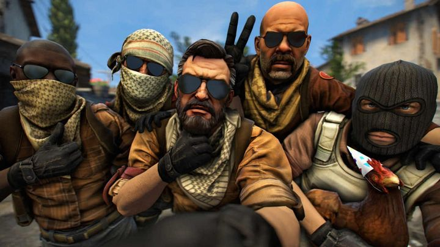

Counter-Strike: Global Offensive est un jeu de tir à la première personne multijoueur en ligne basé sur le jeu d'équipe développé par Valve Corporation. Il est sorti le 21 août 2012 sur PC et consoles. En 2017, Microsoft annonce que le jeu sur Xbox 360 sera compatible avec la Xbox One.
